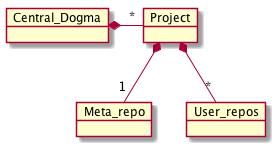

Concepts¶

Project
A project is a top-level element in Central Dogma storage model. Each project contains at least one repository called meta. A project can have more than one repository.
Note
You may find it easier to understand a project as an ‘organization’ in GitHub.
Repository
A repository is where the configuration files of your application are stored actually. It keeps the history of each change (commit), such as who added what change when.
Note
You may find it easier to understand a repository as a ‘repository’ under an organization in GitHub.
User repository
- A user repository is a repository where a user (i.e. you) store the application configuration files. A user can create more than one repository under a project, just like a user creates multiple repositories under an organization.
Meta repository
- A meta repository is a repository whose name is meta in a project. It is dedicated to store the metadata related with the project it belongs to, such as Git-to-CD mirroring settings.
Commit
- A commit is a set of changes added to a repository. Each commit is given a ‘revision’ when it’s added to a repository.
Revision
A revision (or revision number) is an integer which refers to a specific point of repository history. When a repository is created, it starts with an initial commit whose revision is 1. As new commits are added, each commit gets its own revision number, monotonically increasing from the previous commit’s revision, such as 1, 2, 3, …
Note
Unlike Git, although Central Dogma repositories are implemented on top of Git, we do not use SHA1-based commit IDs. Also, Central Dogma has no notion of a ‘branch.’
A revision can also be represented as a negative integer. When a revision is negative, we start from -1 which refers to the latest commit in repository history, which is often called ‘HEAD’ of the repository. A smaller revision number refers to an older commit. For example, -2 refers to the commit before the latest commit, and so on.
A revision with a negative integer is called ‘relative revision’. By contrast, a revision with a positive integer is called ‘absolute revision’.